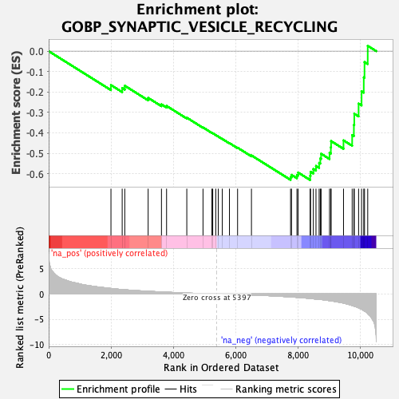
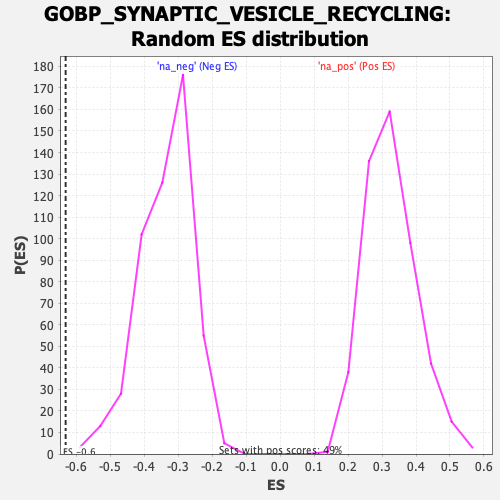

| Dataset | qlf.KOd4vsWTd4_gsea_score |
| Phenotype | NoPhenotypeAvailable |
| Upregulated in class | na_neg |
| GeneSet | GOBP_SYNAPTIC_VESICLE_RECYCLING |
| Enrichment Score (ES) | -0.63107586 |
| Normalized Enrichment Score (NES) | -1.883028 |
| Nominal p-value | 0.0 |
| FDR q-value | 0.027078828 |
| FWER p-Value | 0.568 |

| SYMBOL | RANK IN GENE LIST | RANK METRIC SCORE | RUNNING ES | CORE ENRICHMENT | |
|---|---|---|---|---|---|
| 1 | CANX | 1998 | 1.080 | -0.1661 | No |
| 2 | BTBD9 | 2358 | 0.869 | -0.1806 | No |
| 3 | ACTG1 | 2441 | 0.835 | -0.1693 | No |
| 4 | PLAA | 3191 | 0.528 | -0.2288 | No |
| 5 | SYNJ1 | 3618 | 0.392 | -0.2605 | No |
| 6 | PPP3CB | 3782 | 0.346 | -0.2682 | No |
| 7 | GRIPAP1 | 4431 | 0.186 | -0.3258 | No |
| 8 | SCRIB | 4951 | 0.079 | -0.3736 | No |
| 9 | ITSN1 | 5237 | 0.030 | -0.4001 | No |
| 10 | RAB5A | 5263 | 0.026 | -0.4019 | No |
| 11 | PIP5K1C | 5360 | 0.007 | -0.4109 | No |
| 12 | AP2M1 | 5441 | -0.007 | -0.4184 | No |
| 13 | FCHO2 | 5569 | -0.027 | -0.4299 | No |
| 14 | TOR1A | 5799 | -0.064 | -0.4503 | No |
| 15 | ACTB | 6060 | -0.108 | -0.4727 | No |
| 16 | CYFIP1 | 6505 | -0.200 | -0.5106 | No |
| 17 | PICALM | 7760 | -0.595 | -0.6167 | Yes |
| 18 | ARF6 | 7790 | -0.608 | -0.6056 | Yes |
| 19 | ROCK1 | 7964 | -0.679 | -0.6066 | Yes |
| 20 | ITSN2 | 8002 | -0.693 | -0.5943 | Yes |
| 21 | PACSIN1 | 8388 | -0.904 | -0.6104 | Yes |
| 22 | PPP3CC | 8401 | -0.914 | -0.5907 | Yes |
| 23 | GAK | 8490 | -0.960 | -0.5771 | Yes |
| 24 | CALM3 | 8575 | -1.014 | -0.5620 | Yes |
| 25 | SH3GL1 | 8676 | -1.073 | -0.5470 | Yes |
| 26 | DGKQ | 8714 | -1.097 | -0.5255 | Yes |
| 27 | VAMP4 | 8739 | -1.111 | -0.5024 | Yes |
| 28 | VAMP2 | 9010 | -1.325 | -0.4979 | Yes |
| 29 | DNAJC6 | 9052 | -1.354 | -0.4708 | Yes |
| 30 | PLD2 | 9059 | -1.361 | -0.4403 | Yes |
| 31 | CDK5 | 9458 | -1.811 | -0.4369 | Yes |
| 32 | RAB3A | 9736 | -2.297 | -0.4109 | Yes |
| 33 | AP3B1 | 9791 | -2.408 | -0.3610 | Yes |
| 34 | STX1A | 9804 | -2.438 | -0.3064 | Yes |
| 35 | DNM2 | 9942 | -2.750 | -0.2567 | Yes |
| 36 | AP3D1 | 10038 | -3.021 | -0.1967 | Yes |
| 37 | BIN1 | 10108 | -3.280 | -0.1283 | Yes |
| 38 | SYNJ2 | 10132 | -3.382 | -0.0532 | Yes |
| 39 | SYP | 10235 | -3.894 | 0.0261 | Yes |
